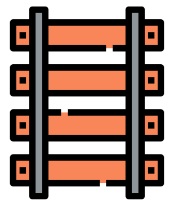

Transports et mobilité
Desserte ferroviaire

Limoges-Guéret-Montluçon (Ligne 10)
Felletin-Guéret-La Souterraine (Ligne 15)
Desserte routière
A71 (Clermont-Ferrand - Lyon)
Route Centre Europe Atlantique
A20 (Paris - Toulouse)
Desserte aérienne
Aérodrome de Guéret Saint-Laurent
Aérodrome de Guéret Montluçon
Aéroport international de Limoges
Pour s'aérer
Les loups de Chabrières
Il est là, tout près, partout autour de vous. Il est gris, blanc ou noir. Oreilles dressées, sens en alerte. Il vous voit de ses yeux jaunes. Vous le dévorez d'un regard fasciné. Ici, il n'y a plus de frontières entre l'hôte et l'invité. Vous êtes ailleurs. Dans une terre de mystère au temps suspendu, où on ne sait plus qui guette et qui est à l'affût. L'animal y règne en maître, dans sa meute, en semi liberté. Bienvenue au Parc Animalier des Monts de Guéret Les Loups de Chabrières
Station Sports Nature des Monts de Guéret
Les Monts de Guéret s'insèrent dans un environnement protégé, mais très facile d'accès. Avec une altitude maximale de 686 m au coeur d'un massif forestier de 2 000 hectares, ils constituent les premiers reliefs depuis l'Ouest de la France pour les pratiques de pleine nature.Dotés d'espaces naturels remarquables, de superbes panoramas, de 150 km de ruisseaux et rivières et 41 hectares de plans d'eau. Les Monts de Guéret offrent un formidable terrain de jeux autour d'activités terrestres, nautiques et aériennes !
Bibliothèque multimédia
Insérée au cœur d'un complexe culturel et sportif entre l'esplanade Nelson Mandela et la piscine municipale, la Bibliothèque Multimédia du Grand Guéret est le lieu privilégié de la lecture publique et de la culture partagées sur l'agglomération. Déployée sur 3 000m2 avec deux niveaux de lecture publique, le rez-de-chaussée et le 1er étage, elle met gratuitement à disposition de tous, une collection de plus de 135 000 documents dont prés de 81000 livres de lecture publique, 13600 cd, et près de 8300 dvd et blu-ray ainsi que des journaux et revues… dans tous les grands domaines de la connaissance.
Les offres d'emplois
Gestionnaire administratif / animateur Leader et assistance administrative politiques territoriales
Lire la suite
Agent d'exploitation des réseaux AEP/ASSAINISSEMENT/EPU (en contrat CDI )
Lire la suite
Technicien(ne) télégestion et objets connectés (en contrat CDI)
Lire la suite
Agent référent (h/f) chargé de la gestion du Relais Petite Enfance (RPE) du Grand Guéret
Lire la suite
 1.png)